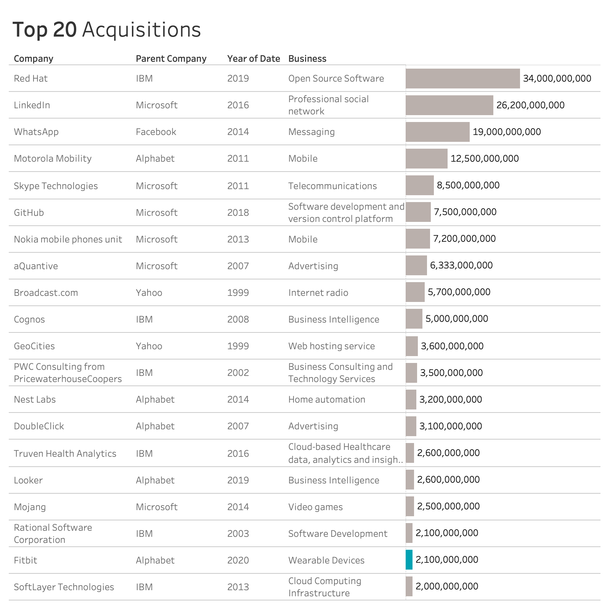

Check out more of my work
Vanessa Liang


On November 1, Google confirmed that it will pay $7.35 per share for the wearables company in an all-cash deal that values Fitbit at $2.1 billion. It is common for big tech companies to acquire small ones working on different technologies. Since 1987, there have been about 996 merge and acquisition from the seven big tech companies: Alphabet, Apple, Facebook, Microsoft, IBM, Twitter, and Yahoo!.
This year, IBM closed its acquisition of Red Hat for $34 Billion, positioned the acquisition the top of all M&A of the seven companies.
Central Mediterran route, from Sub-Saharan Africa to Italy, which is known as the deadiest migration route, topped the list of routes with most incidents. Many died on the way crossing the desert and went missing in the sea. Central America, composing of El Salvador, Guatemala, and Honduras, ranked second in the list. Extreme socioeconomic inequality, natural disasters and poor governance, are the root causes of the migration routes. The Eastern Mediterranean route refers to the sea crossing from Turkey to Greece. Refugees seeking shelter from Syria's war to the EU via this route.
~Time (Alphabet).png)
The number of dead and missing rose sharply from 2014 to 2015, and experienced an significant increase in 2017. When breaking down the number to gender, the number of males victims was almost three times higher than the one of females.
Differing death and missing migrants figures among regions is only part of the story this data tells - we can also use it to determine how common a cause of death is.
.png)
As Mediterran route is the most active and deadiest route, it is obvious that drowning is the major cause of the tragics. Followed are sickness, vehicle accident, and mix of multiple causes.
As Mediterran route is the most active and deadiest route, it is obvious that drowning is the major cause of the tragics. Followed are sickness, vehicle accident, and mix of multiple causes.

As Mediterran route is the most active and deadiest route, it is obvious that drowning is the major cause of the tragics. Followed are sickness, vehicle accident, and mix of multiple causes.
As Mediterran route is the most active and deadiest route, it is obvious that drowning is the major cause of the tragics. Followed are sickness, vehicle accident, and mix of multiple causes.
As Mediterran route is the most active and deadiest route, it is obvious that drowning is the major cause of the tragics. Followed are sickness, vehicle accident, and mix of multiple causes.

As Mediterran route is the most active and deadiest route, it is obvious that drowning is the major cause of the tragics. Followed are sickness, vehicle accident, and mix of multiple causes.